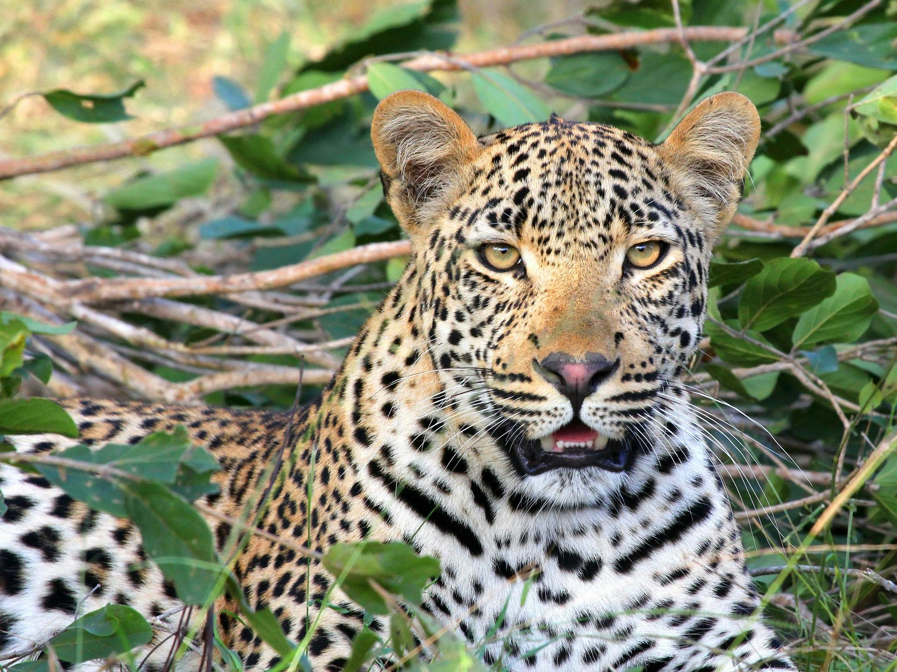
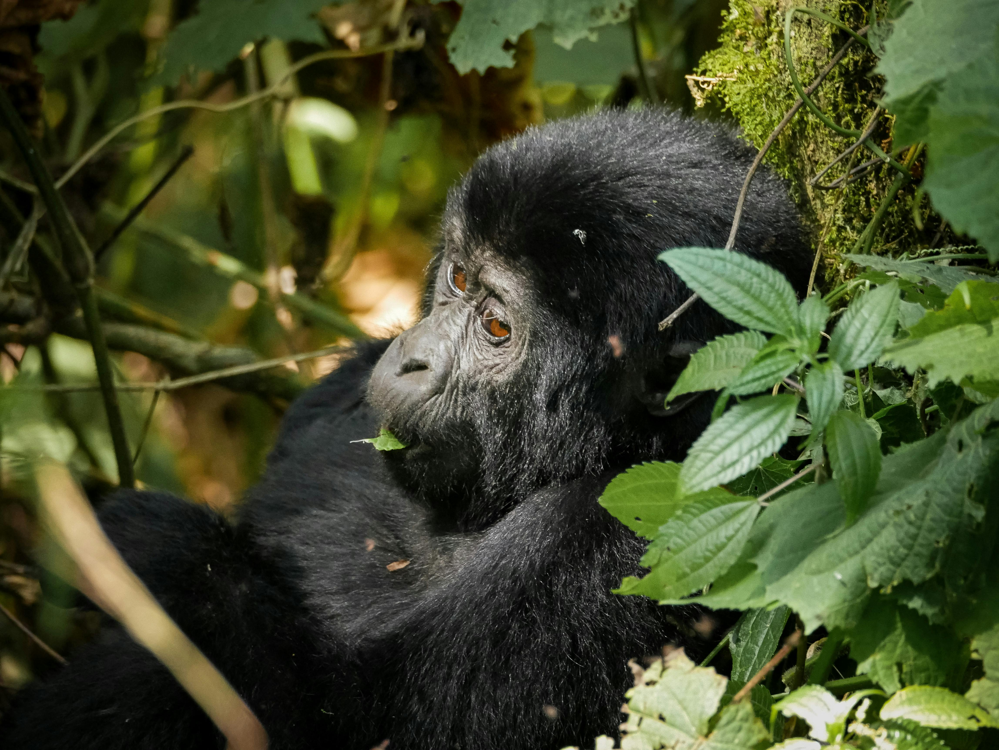
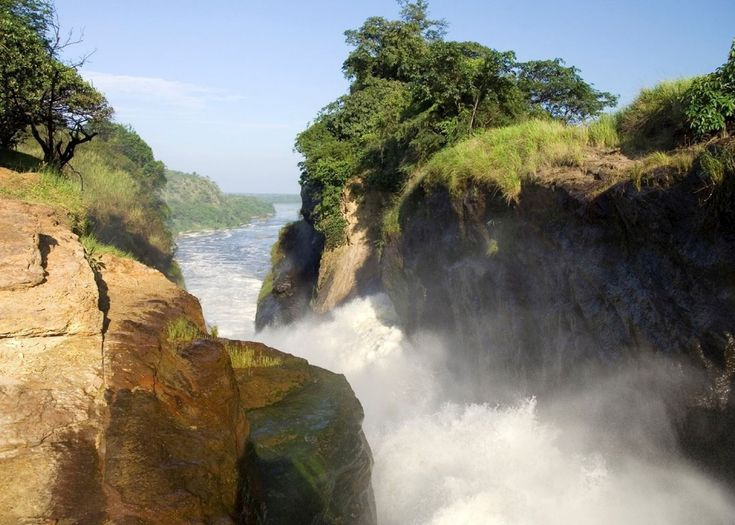
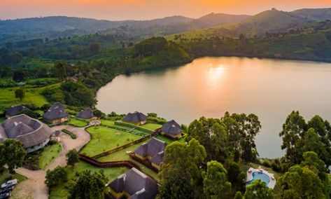
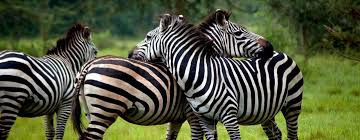

Top 5 Safari Destinations in Uganda
Uganda, known as the "Pearl of Africa," offers some of the most breathtaking safari destinations. From lush rainforests to savannahs teeming with wildlife, Uganda provides a unique and diverse safari experience. Here are the top five safari destinations in Uganda that you should visit.
Queen Elizabeth National Park
Queen Elizabeth National Park is one of Uganda’s most popular parks, known for its diverse wildlife, including lions, elephants, and hippos. The park's unique features include the Kazinga Channel, which offers boat safaris with great wildlife viewing opportunities.
Bwindi Impenetrable National Park
Bwindi Impenetrable National Park is famous for its mountain gorilla trekking. It is one of the best places in the world to see these endangered great apes in their natural habitat. The park’s dense forests provide a stunning backdrop for this unforgettable experience.
Murchison Falls National Park
Murchison Falls National Park is known for the spectacular Murchison Falls, where the Nile River forces its way through a narrow gorge. The park offers fantastic game viewing, including the Big Four (excluding rhinos), and boat cruises along the Nile.
Kibale National Park
Kibale National Park is renowned for its high concentration of primates, including chimpanzees. Visitors can embark on chimpanzee tracking adventures and explore the park's lush forests, which are also home to other species like colobus monkeys and various bird species.
Lake Mburo National Park
Lake Mburo National Park is a smaller park known for its picturesque landscape and abundant wildlife. It is a great place for walking safaris, boat safaris, and horseback riding, offering a more intimate safari experience compared to larger parks.
 Back to Blogs